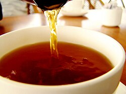
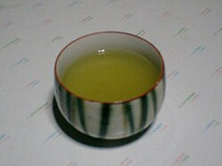
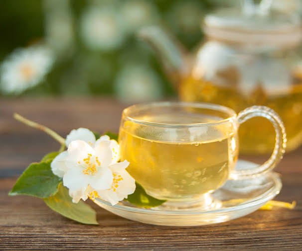
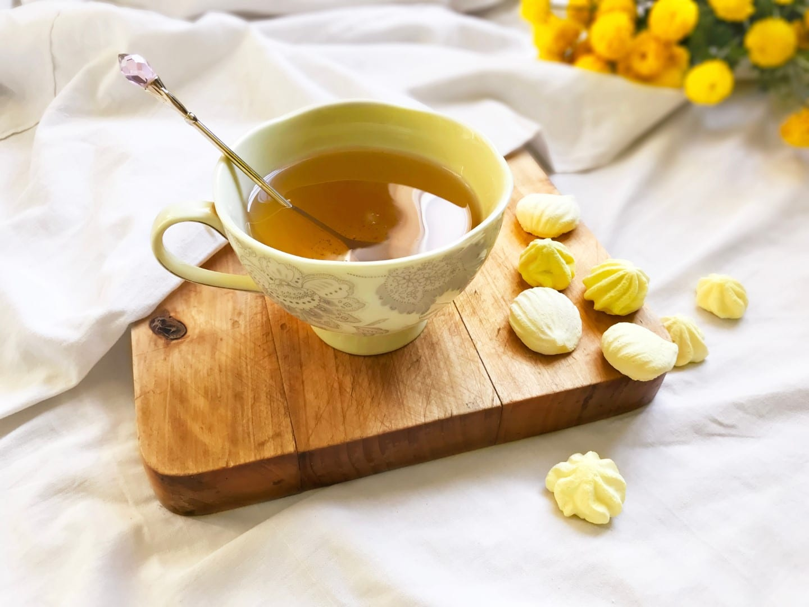
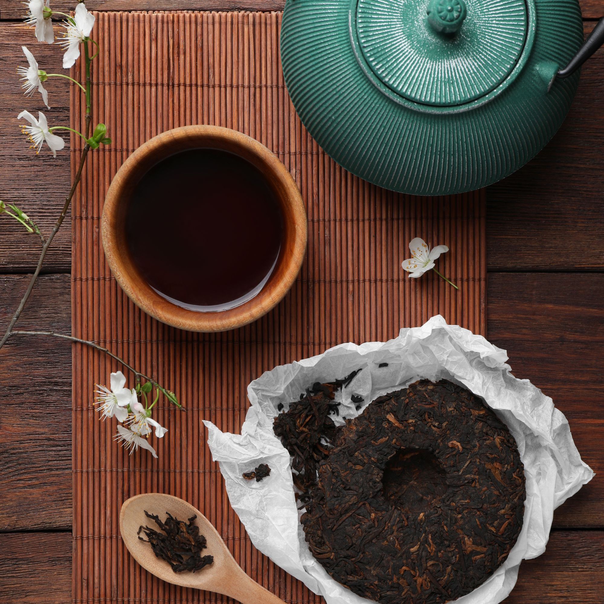
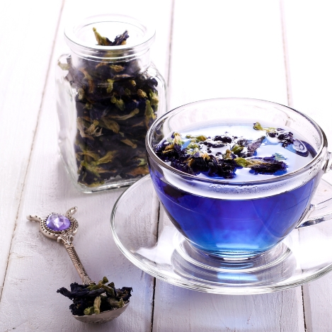

Herbata Czarna
Herbata poddawana pełnej oksydacji, dzięki czemu zyskuje mocny, wyrazisty smak i ciemną barwę naparu. W Chinach, skąd pochodzi, nazywana jest herbatą czerwoną ze względu na bursztynowo-miedziany kolor liści i naparu.
Główne odmiany:- Yunnan (Dianhong) - głęboki, lekko słodkawy (Chiny)
- Assam - mocny, słodowy, idealny z mlekiem (Indie)
- Darjeeling - subtelny, muszkatowy (Indie)
- Cejlon - rześki, z cystrusową nutą (Sri Lanka)
Temperatura: 100°C Czas parzenia: 3-5min

Zielona Herbata
Wytwarzana z minimalnie utlenianych liści Camellia sinensis, co pozwala zachować świeży, roślinny smak oraz bogactwo antyoksydantów. Bardzo popularna w Japonii, dokąd trafiła z Chin za sprawą mnicha Eisai.
Popularne rodzaje:- Gyokuro - szlachetna, zacieniana przed zbiorem; bogata w L-teaninę i umami
- Matcha - sproszkowana zielona herbata używana w tradycyjnej ceremonii chanoyu
- Kamairicha - rzadziej spotykana herbata prażona na patelni, pozbawiona goryczki
Temperatura: 70-80°C (nie zalewać wrzątkiem!) Czas parzenia: 2-3min

Herbata Biała
Najbardziej subtelna z herbat, wytwarzana z wczesnowiosennych pąków i młodych listków suszonych naturalnie na słońcu. Ponieważ liście nie są zwijane ani ugniatane, zachowują swój naturalny kształt oraz srebrzysty meszek. Bogata w antyoksydanty i polifenole.
Główne odmiany:- Baihao Yinzhen (Srebrne Igły) - najszlachetniejsza, wyłącznie ze srebrzystych pąków
- Bai Mudan (Biała Piwonia) - pąk z dwoma listkami, o nieco pełniejszym smaku
- Shoumei - zbierana później, ma ciemniejszy kolor i owocowy finish
Temperatura: 80-85°C Czas parzenia: 2-3min

Herbata Żółta
Niezwykle rzadka herbata cesarska poddawana procesowi nieenzymatycznej oksydacji zwanej „duszeniem na żółto” (men huan). Daje słomkowo-żółty napar o aksamitnym, delikatnie słodowym smaku z długim, orzechowym finiszem pozbawionym trawiastej cierpkości.
Cenione odmiany:- Junshan Yinzhen - najsłynniejsza, ze srebrzysto-złocistych pąków (Hunan)
- Huoshan Huangya - świeża, o zbalansowanych nutach kwiatowo-słodowych (Anhui)
- Mengding Huangya - historyczna odmiana z góry Mengding (Syczuan)
Temperatura: 75-80°C Czas parzenia: 1-3min

Herbata Pu-erh
Wytwarzana w prowincji Junnan herbata poddawana procesowi mikrobiologicznej fermentacji i leżakowania (w Chinach klasyfikowana jako herbata czarna). Wyróżnia się ziemistym, głębokim smakiem oraz silnymi właściwościami wspomagającymi metabolizm i trawienie.
Główne typy:- Sheng (surowy) - dojrzewa naturalnie przez lata, a nawet dekady
- Shu (dojrzały) - proces starzenia przyspieszony metodą fermentacji wodui
- Prasowana (ciastka/gniazda) - tradycyjna forma ułatwiająca leżakowanie
Temperatura: 95-100°C Czas parzenia: 2-4min

Herbata Ulung
Herbata częściowo utleniona (pomiędzy zieloną a czarną), tradycyjnie pochodząca z Chin i Tajwanu. Liście mają utlenione brzegi i jaśniejszy środek, co daje niezwykle bogaty bukiet nut kwiatowych, miodowych lub prażonych w zależności od stopnia wypalenia.
Słynne odmiany:- Da Hong Pao - legendarny, skalny ulung o dymno-mineralnym aromacie
- Tie Guan Yin - świeży, intensywny kwiatowy ze sprężystych kulek
- Rou Gui - charakterystyczny, cynamonowo-korzenny profil smakowy
Temperatura: 90-95°C Czas parzenia: 2-3min